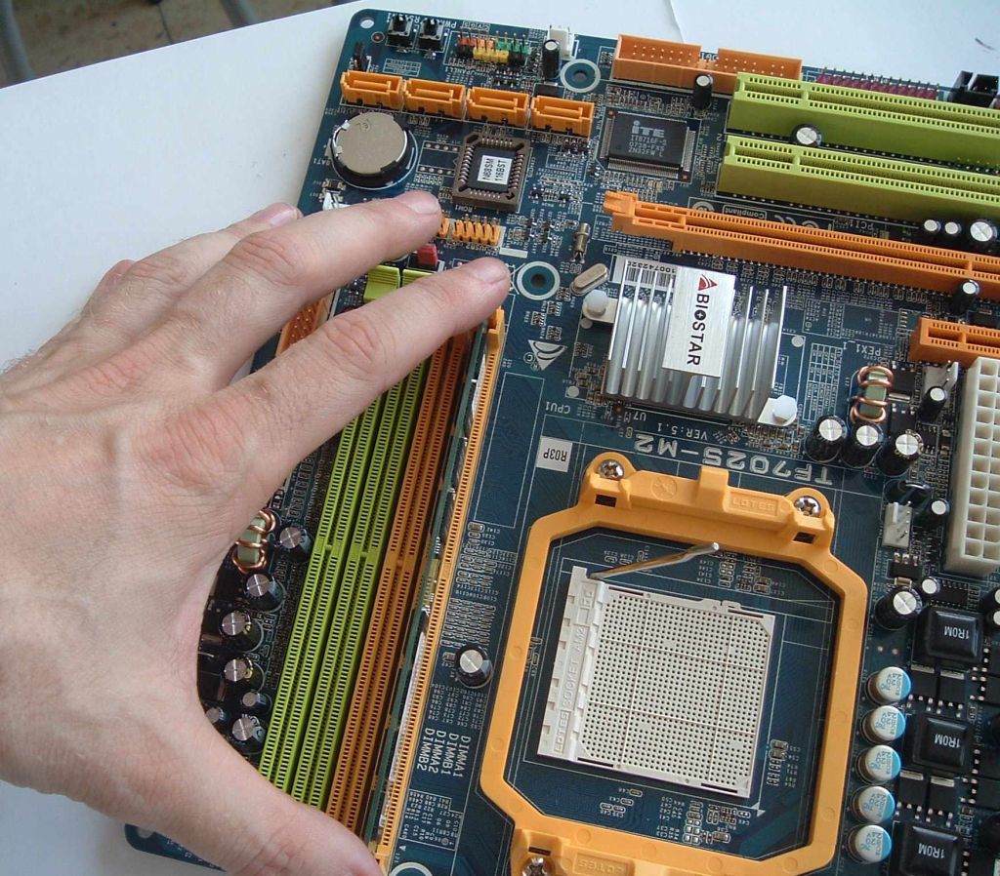

Muntatge d'un equip
Un cop es disposa dels components que hauran de formar part de l’equip, és el moment de muntar-lo. Els components s’han triat per les seves característiques i tenint en compte que siguin compatibles. Per tant, el muntatge hauria de ser un procés senzill i sense problemes posteriors. Malgrat això, un cop muntat l’equip caldrà assegurar-se que els components funcionen com se suposa que ho han de fer (complint les especificacions de funcionament).
Una vegada muntat l’equip, se n’ha de verificar el bon funcionament. Per a això seran vàlides les eines de benchmark, per a assegurar-se que compleix els requeriments que es van definir en el seu moment.
En l’etapa d’implementació haureu d’assemblar els components escollits anteriorment, seguint els procediments adequats i assegurant-ne una bona connexió i funcionament.
En aquest apartat veureu en detall el procés de muntatge d’un equip. Malgrat que el fet de muntar uns components o uns altres marca algunes diferències a l’hora d’assemblar els components, es tracta d’un procediment molt similar, de manera que l’apartat us serà útil per a conèixer els procediments generals de muntatge, veient en aquest cas un exemple concret.
Procediments per a la instal·lació de maquinari
Moltes vegades, en la nostra vida laboral, ens trobarem amb la necessitat d’instal·lar un sistema informàtic, d’haver-lo de reparar o d’ampliar.
En funció dels components del sistema informàtic en qüestió, haurem de procedir de manera diferent. Però, en tot cas, serà necessari observar les indicacions següents:
1) Determinar quina operació cal realitzar
2) Disposar de tota la documentació tècnica necessària
3) Planificar l’operació
4) Prendre les mesures de seguretat adequades (en l’àmbit elèctric i físic)
5) Realitzar l’operació
6) Comprovar el funcionament correcte del canvi realitzat
7) Anotar o registrar les operacions realitzades
Un dels punts més importants i al qual caldrà dedicar més esforços serà, doncs, la interpretació eficient i correcta de la documentació tècnica de cada component dels ordinadors.
Excepte si es tracta de dispositius que es poden connectar i desconnectar en calent (hot plug), és a dir, sense apagar l’ordinador, per a realitzar les operacions amb seguretat caldrà observar els passos següents:
1) Apagar l’ordinador
2) Desconnectar l’ordinador de la xarxa elèctrica
3) Connectar-hi o desconnectar-hi el dispositiu
4) Connectar l’ordinador a la xarxa elèctrica
5) Engegar l’ordinador
6) Reconfigurar el sistema, tant si s’ha instal·lat com desinstal·lat un dispositiu, mitjançant les utilitats proporcionades pel sistema operatiu
La majoria de dispositius i sistemes operatius actuals suporten el Plug and Play (o PnP), un sistema que autoconfigura els paràmetres de funcionament intern del dispositiu, com ara el número d’IRQ (interrupt request) o les adreces d’entrada/sortida. Això facilita la configuració dels dispositius i evita problemes com la duplicitat de valors per a diferents dispositius.
Sovint, la instal·lació o canvi estaran forçats pel mal funcionament d’algun dels components del sistema. En aquests casos, serà útil conèixer el sistema d’autodiagnòstic d’arrencada(power on self test) de la placa base, que amb diferents combinacions de tons llargs o curts (beep), codifica el problema detectat. Són els anomenats codis POST. N’hi ha diverses versions, depenent dels fabricants, per això és important consultar el manual tècnic de la placa base amb què treballem.
Vegeu l’apartat “Configuració, proves i documentació del muntatge” d’aquesta unitat per a una explicació més extensa sobre els codis POST.
Normativa de seguretat sobre la instal·lació de components
De la mateixa manera que la majoria d’elements que trobem al nostre voltant, els PC estan subjectes a la normativa internacional. Des de la mida d’un full de paper fins a la mida de les finestres, tot està perfectament mesurat i calibrat per a obtenir un equilibri entre ergonomia i rendiment econòmic. Aquesta estandardització porta a unir esforços que redunden en benefici de tots. Malgrat que les normatives són diverses —n’hi ha de nacionals, internacionals, de la Unió Europea…—, cada cop es tendeix més a la uniformització d’aquestes.
Normativa en els sistemes informàtics
En l’actualitat, els equips microinformàtics han de complir uns requisits que afecten fonamentalment dos aspectes: emissió d’interferències i seguretat en la manipulació interna dels equips. El control de l’emissió té com a finalitat evitar que els ordinadors generin interferències en altres dispositius, a més de protegir el medi ambient de l’usuari. La seguretat en la manipulació respon a unes normes bàsiques que ajudin a prevenir accidents fonamentalment derivats de la manipulació elèctrica, encara que també se’n produeixen per la manipulació mecànica dels components.
Hi ha diverses agències que s’encarreguen de certificar el maquinari des d’aquest punt de vista de seguretat. Les més importants són la FCC i la TÜV, cadascuna en el seu departament dedicat específicament al tema. Només entitats de solvència internacional poden garantir una normativa adequada.
- Logo de l'entitat certificadora Communications Comission del govern federal dels EUA
- La FCC (Federal Communications Commission) és una agència independent del govern dels EUA que dóna cobertura a cinquanta estats i informa directament al Congrés americà. Fou establerta l’any 1934 i és responsable de la regulació de les comunicacions per radio, TV, cablejades i per satèl·lit, tant nacionals com internacionals.
- La TÜV (Technischer Überwachungs-Verein) desenvolupa serveis d’inspecció, control, auditoria tècnica i certificació en tots els àmbits: qualitat, medi ambient, prevenció de riscos laborals, seguretat industrial i alimentària, instal·lacions i obra civil, incloent-hi seguretat vial amb el servei ITV.
Hi ha dues normatives que regulen la certificació d’equips microinformàtics segons les dues organitzacions esmentades. Les normatives són la FCC, part 15 EMI Certification i la UL/CSA/TÜV Safety Certification.
L’FCC, part 15, s’encarrega de certificar els sistemes complets i no els components individuals. A partir de la finalitat d’aquests equips hi ha establertes dues categories amb diferents requeriments: les classes A i B. La classe A regula tots els sistemes que tindran l’entorn de treball en un ambient comercial. Aquesta normativa té uns requeriments menys estrictes que la classe B, que regula els sistemes que treballaran en un entorn domèstic. El procés de certificació és senzill. Cada component (targetes, perifèrics, etc.) té la seva pròpia certificació FCC, de manera que es podrà vendre independentment. Si un sistema sencer ha passat la certificació FCC, l’assemblador pot modificar o afegir targetes i perifèrics que tinguin la seva pròpia certificació FCC, de manera que es continuarà mantenint la conformitat amb la norma.
Alguns dels requisits que ha de complir un equip per a no contradir la normativa són:
- No es pot substituir la placa base, font d’alimentació o caixa sense tornar a certificar l’equip (vegeu l’esquema en la figura).
- Els teclats i ratolins no requereixen una certificació independent si es venen com a part integrant d’un sistema, encara que la majoria de vegades compleixen la normativa sense problemes. Els monitors, impressores i perifèrics externs amb alimentació han de tenir cadascun la seva pròpia certificació.
Pel que fa a la UL/ETL/CSA/TÜV , les sigles corresponen a Underwriters Laboratories / Electronic Testing Laboratories / Canadian Santdards Association / German Safety Agency, i és un recull de normatives d’agències esteses per tot el món. Els equips de prestacions elevades compleixen la normativa UL/CSA/TÜV.
Entitats certificadores
Hi ha altres agències certificadores, nacionals com AENOR (Associació Espanyola de Normalització i Certificació) o internacionals com ISO (Organització Internacional per a la Normalització) o ETSI (Institut Europeu d’Estandardització de les Telecomunicacions).
Una llista de requisits d’un equip per a complir aquesta normativa són:
- L’usuari no pot tenir accés a les altes tensions de l’equip (per exemple, els connectors de la font d’alimentació). No totes les fonts superen aquestes especificacions.
- Tots els perifèrics alimentats des del PC han de tenir fusibles a les línies de corrent (fins i tot en casos en què no semblaria necessari pel baix consum de corrent, com és el cas de ratolins o teclats).
- Les bateries de liti de la màquina (portàtils) han d’estar protegides doblement quan es produeix el procés de càrrega per part del sistema.
- Tots els connectors d’alimentació, fusibles i terminals d’interruptors, polsadors i commutadors han d’estar clarament etiquetats.
- Els perifèrics han de disposar de la pròpia certificació.
- Un test de dits (finger test) ha de garantir que l’usuari no pot tocar parts mòbils del sistema com, per exemple, ventiladors.
- L’equip ha de funcionar correctament amb totes les targetes i perifèrics connectats que generarien un consum equivalent al d’un usuari perquè la certificació sigui vàlida.
- Els components plàstics han de tenir la seva certificació independent quant a la inflamabilitat i toxicitat del material.
- Les torres o caixes també han d’estar certificades quant al disseny, vigilant l’estabilitat i un bon sistema d’evacuació d’aire.
- El sistema ha de tenir en un lloc visible els adhesius i etiquetes que indiquen el compliment de normatives.
Eines necessàries per al muntatge i manteniment d'equips informàtics
Primer que res, i encara que no es tracta exactament d’una eina, assegureu-vos que teniu espai suficient per a treballar amb comoditat, i que la il·luminació és adequada. A més comproveu un altre cop que teniu tots els components a mà i que no heu oblidat res de necessari per al vostre equip.
Tot seguit, malgrat que sembli sorprenent, les eines que ens faran falta per a muntar o reparar equips informàtics són molt bàsiques:
- Cal disposar d’un tornavís d’estrella també conegut com a tornavís Philips, si és possible magnetitzat, que utilitzarem per a fixar tots els components de l’equip, tant els panells de la caixa, com la placa base o tots els dispositius d’emmagatzematge.
- És convenient utilitzar també unes pinces que ens permetran arribar a punts on ens sigui més complicat amb les mans, moure components de mida menuda com jumpers, etc.
- També seran útils unes alicates, que ens poden servir per a treure els panells metàl·lics que té la caixa quan encara no s’han instal·lat els dispositius corresponents. Es pot fer amb les mans però pot resultar perillós, ja que molts cops els acabats de les caixes tenen vores tallants. Si hem de tallar brides o algun paquet “rebel” ens faran molt servei unes alicates de tall.
- Ens farà molt servei una llanterna. La nostra àrea de treball ha d’estar ben il·luminada, però les caixes d’ordinador poden tenir zones fosques on és complicat veure què fem. Una bona llanterna ens pot ajudar a il·luminar aquestes àrees.
Podem utilitzar una caixa d’eines com la de la figura o similar, on disposem de totes les eines necessàries i algunes de més per si es presenta algun problema.
Quants als visos que utilitzarem per a connectar els components la major part de vegades vénen inclosos amb la caixa o amb el dispositiu que volem connectar, però en cas contrari són molt fàcils de trobar a qualsevol establiment de tipus ferreteria. Utilitzeu classificadors o caixes per a emmagatzemar aquestes peces menudes com cargols o brides.
Alguns models de caixa pensats per a ser modificats fàcilment tenen la particularitat que ni tan sols necessiten aquestes eines per a muntar i desmuntar dispositius, ja que disposen de mecanismes i fixacions lliscants que no utilitzen cargols.
A part de les eines, tingueu a mà la documentació dels components adquirits: manuals, configuracions, etc.
- El braçalet antiestàtic sol anar acompanyat d'un manual d'utilització.
A més, durant el procés de muntatge és molt aconsellable que compliu aquestes senzilles regles:
- Tracteu els components amb compte.
- No doblegueu mai una placa de circuit imprès.
- Assegureu-vos que els cables que utilitzeu estan en perfecte estat.
- No forceu els components. Si alguna cosa sembla que no encaixa, comproveu que l’esteu col·locant al lloc adequat.
També cal utilitzar un braçalet antiestàtic que es connecta a la carcassa metàl·lica de l’ordinador, per a evitar danyar els components electrònics amb l’electricitat estàtica que s’acumula als nostres cossos (figura). La seva utilització només comporta:
- Ajustar l’extrem del braçalet al nostre canell.
- Connectar la pinça inclosa en la carcassa de l’ordinador.
- Manipular els components electrònics amb el braçalet posat.
Mentre no hàgiu comprovat l’equip, deseu també totes les caixes i rebuts dels components per si heu de fer ús de la garantia.
Manuals de muntatge de components
Els manuals tècnics dels components són una font indispensable d’informació per a conèixer el funcionament i les instruccions d’instal·lació dels components que formen part del nostre equip informàtic. Hi ha diversos tipus de documents tècnics que ens donen tot tipus d’informació sobre cadascun dels components (processador, memòria RAM, placa base, etc.).
Generalment, a l’hora de comprar un component aquest inclou el manual d’especificacions tècniques i les instruccions d’instal·lació (vegeu-ne una mostra en la figura), encara que cada cop és més freqüent que només trobem un full d’instal·lació i una referència a la pàgina web del fabricant.
La documentació que ens ofereixen els fabricants en la seva pàgina de suport tècnic inclou normalment:
- Especificacions tècniques
- Característiques del producte
- Manuals d’instal·lació
El manual d’instal·lació és indispensable per a conèixer totes les particularitats d’un determinat component de maquinari i instal·lar-lo correctament.
Per exemple, en el cas d’un processador, aquest manual inclou tots els passos per a fixar el processador al seu sòcol, i també per a la col·locació del seu dissipador-ventilador, específicament per al model que s’hagi adquirit. Tot el procés es troba exemplificat amb croquis o imatges.
Malgrat que tots els components disposen de documentació tècnica, hem de tenir en compte sobretot la que es refereix a la placa base i al processador, ja que es tracta dels dispositius més complexos i que requereixen més habilitat per a instal·lar-los. Quant a altres components com la memòria RAM o les unitats d’emmagatzematge, en tenim prou de conèixer-ne les característiques bàsiques per a saber-ne la compatibilitat.
Procés de muntatge de la unitat central de procés
- L'Apple I de 1976 es venia com un conjunt de peces per muntar i fins i tot construir-ne la caixa
El muntatge d’un ordinador personal comporta bàsicament l’assemblatge dels components que trobem dins la CPU (unitat central de procés) comunament coneguda com la caixa. A partir d’aquí només cal que connecteu una sèrie de perifèrics que ja vénen totalment muntats comercialment.
Fent la connexió correcta de la placa base amb tots els components necessaris (processador, unitats d’emmagatzematge, memòria RAM i connectors d’expansió) disposarem d’un equip preparat per a instal·lar un sistema operatiu.
Caixa i font d'alimentació
En aquest projecte de muntatge utilitzarem una caixa ATX. Malgrat que es tracta d’un format que ja fa anys que és en el mercat, s’ha imposat als altres i molt probablement és el que utilitzeu (si no és un portàtil!). Hi ha altres tipus de caixes que es podrien utilitzar (com les caixes microATX), però són més complicades d’ampliar i disposen de menys espai per a instal·lar els components amb comoditat.
Arribats en aquest punt, el primer pas a l’hora de muntar l’equip serà l’assemblatge de la caixa i la font d’alimentació. Cal posar la caixa en posició horitzontal sobre una superfície estable i neta (per exemple, una taula de taller). D’aquesta manera podrem treballar en el muntatge sense perill que ens caigui i en una posició ergonòmicament còmoda per a nosaltres.
Normalment, en el moment de comprar-les, les caixes ja vénen muntades, però en alguns casos els haurem d’acabar de donar els detalls finals, com pot ser muntar els peus de goma que els donaran estabilitat (figura).
El primer pas...
en el muntatge implica treure la caixa del seu embalatge de cartró, amb cura de no donar-hi cops.
En alguns casos la font d’alimentació ja ve muntada al xassís, però, si hem triat un model que no en porti o volem canviar la de sèrie per un model amb més prestacions o més silenciosa, també haurem de fer aquest pas (figura).
Complements necessaris
En molts casos les caixes inclouen els visos necessaris per al muntatge de dispositius i també els peus de goma i brides per a subjectar els cables.
Un cop presentada la font en la seva posició, hem de cargolar quatre visos que deixaran la font ajustada i preparada per a alimentar el nostre equip. El fet de col·locar la font abans que cap altre component no és imprescindible, però ens permetrà col·locar la resta de components amb comoditat si ho fem a posteriori.
Memòria RAM
- 
- Els DIMM de memòria RAM només encaixen en una posició
Per tal de col·locar la memòria en la placa base localitzeu els sòcols corresponents i assegureu-vos que podeu col·locar la memòria sense problemes. A continuació feu els passos següents:
- Observeu el mòdul de memòria i tot seguit el sòcol. Veureu que la memòria té una osca clau que encaixa amb un sortint del sòcol, de manera que és impossible connectar-la malament.
- Trobeu i obriu els clips que hi ha a cada costat del sòcol.
- Alineeu el mòdul de memòria amb el sòcol, amb l’ajut de la marca que hem vist abans.
- Feu lliscar la memòria dins el sòcol de manera perpendicular fins a l’interior.
- Trobareu una certa resistència que haureu de vèncer fent pressió al llarg del mòdul.
- Notareu com el DIMM encaixa. Els clips dels cantons s’haurien de tancar sols.
- Assegureu-vos que la memòria no balla i està ben connectada.
Caldrà que repetiu el procés per a cada mòdul de memòria de què disposeu. Podeu veure els passos principals en la figura.
En cas que la placa suporti Dual-Channel, haureu de col·locar els mòduls que heu comprat en parelles de manera que el color coincideixi per a cada parella.
La tecnologia de memòria Dual-Channel...
permet un increment del rendiment gràcies a l’accés simultani a dos mòduls de memòria (en blocs de 128 bits en lloc de 64 bits com anteriorment).
Processador i ventilador
En una superfície plana col·loqueu la placa base per posar-hi el processador. Aquest pas també es podria fer un cop instal·lada la placa a la caixa, i de fet si volem actualitzar el processador habitualment ho farem així. Però, en aquest cas i atès que estem fent la instal·lació des de zero, és aconsellable col·locar-lo d’aquesta manera, cosa que ens evita treballar amb obstacles i ens facilita el procés d’assemblatge.
Com ja sabeu, els dos fabricants que s’han de tenir en compte per a triar un processador són Intel i AMD. Els següents són els passos bàsics que heu de fer per a muntar un processador d’una de les dues grans marques.
Processador AMD 64 x2 Dual Core
Observeu els pius de connexió i la marca triangular que té a un cantó per a col·locar-lo al seu sòcol correctament.
Els passos que heu de fer per a instal·lar un processador Intel són els següents:
- Obriu la tapa protectora del sòcol.
- Traieu la tapa protectora del processador.
- Comproveu l’orientació del processador a partir de la marca triangular que té a un cantó (també la trobareu al sòcol).
- Col·loqueu el processador al seu lloc de manera vertical i pressioneu-lo lleugerament per ajustar-lo.
- Tanqueu la tapa protectora i accioneu la palanca d’ajustament (vegeu la figura).
En comprar un dissipador/ventilador, normalment aquest disposarà d’una capa de pasta tèrmica ja preparada de fàbrica que ajuda a la dissipació correcta de la calor. En cas de no tenir aquesta capa n’haurem de posar una manualment.
No toqueu en cap cas els connectors del sòcol ni els contactes del processador.
Donades les altes velocitats a què treballen els processadors actuals, caldrà instal·lar-hi un sistema de refrigeració. Hi ha diversos sistemes per a refrigerar la caixa, però el més utilitzat és el que inclou un, dos o més ventiladors per a ajudar a la dissipació de la calor (un situat a sobre del dissipador del processador, i un que habitualment inclou la caixa a la part posterior).
Un mal funcionament del ventilador redueix el rendiment de l’equip i pot arribar a provocar danys en el processador, de manera que cal assegurar-ne un funcionament adequat
En la secció “Recursos de contingut” del web del mòdul podeu consultar els manuals en vídeo de l’empresa AMD sobre el mètode d’instal·lació dels seus processadors.
Els processadors in a box es venen directament amb un ventilador compatible (figura) per a instal·lar-lo a la vegada a la placa base.
Així, el ventilador que ve amb la CPU serà suficient per a un ús habitual de l’ordinador. En obrir la capsa i observar el processador veureu que a la part inferior hi ha una làmina adhesiva que cal treure abans d’instal·lar-lo al seu lloc. Es tracta d’una protecció per al material tèrmic que permetrà una dissipació millor de la calor del processador. Hi ha diferents models de ventiladors, encara que en general seran compatibles amb Intel o AMD. La instal·lació estarà detallada per a cada model, però en general només haureu de fer els passos següents:
- El ventilador del processador té la pròpia connexió d'alimentació situada a la placa base.
- Col·locar el dissipador/ventilador a sobre del processador.
- Assegurar-vos que la pasta tèrmica fa un bon contacte entre el dissipador i el ventilador.
- Fer encaixar els enganxalls en la placa base, de manera que quedi fix a sobre.
- Connectar l’alimentació del ventilador a la placa base.
Si seguim correctament els passos ens assegurarem que aquest serà capaç de refrescar al màxim el processador durant el seu funcionament i aconseguir-ne, per tant, un bon rendiment.
Al seu torn, la major part de les caixes disposen d’un ventilador per a treure a l’exterior l’aire calent. Com podeu veure en la figura, per a alimentar aquest ventilador hem de connectar-lo a un dels connectors Molex de la font d’alimentació.
Podeu consultar els manuals d’instal·lació de processadors Intel a la secció “Recursos de contingut” del web del mòdul.
Placa base i connectors
El fet d’escollir la placa base determinarà molts de la resta de components del sistema. De fet, les plaques base estan dissenyades per a un tipus de processador. Malgrat que històricament hi ha hagut diversos fabricants, per al tipus de muntatge que ens ocupa (un equip estàndard amb caixa ATX) només hi ha dues opcions possibles (processador Intel o AMD).
Els dispositius com el PC ultraportàtil o ultra-mobile PC o el PC de butxaca o pocket PC utilitzen processadors integrats com l’Intel Atom, el VIA C7 o l’ARM XScale.
Abans de col·locar finalment la placa base, cal acabar de preparar la caixa, que en molts casos disposa d’un embellidor per a les connexions que no ha de coincidir necessàriament amb el que encaixa amb la nostra placa base. Per tant, haurem de fer els passos que segueixen (els podeu veure en la figura).
- Descargoleu l’embellidor de la caixa i deseu-lo si no encaixa amb la placa a instal·lar.
- Traieu les plaques metàl·liques que necessiteu de l’embellidor de la placa per deixar pas als connectors d’aquesta. Utilitzeu unes alicates si cal.
- Encaixeu l’embellidor al seu lloc. Pot anar amb cargols o simplement entrar a pressió.
- Situeu la placa base al seu lloc, comprovant que podeu encabir-la bé i que tots els connectors són fàcilment accessibles des de l’exterior.
- Un cop fet això podeu passar a cargolar la placa al seu lloc com veureu en els passos següents .
Per a fixar la placa al seu lloc els passos a seguir són:
- Presenteu la placa base a la caixa i localitzeu els punts on cal posar un cargol per a fixar-la.
- Marqueu aquests punts amb un retolador o recordeu-los .
- Poseu un suport per a la placa base a cada un d’aquests punts.
- Col·loqueu la làmina de connexions corresponent a la placa al seu lloc de la caixa.
- Situeu la placa al seu lloc i poseu un cargol per a cadascun dels suports que heu posat anteriorment. En cap cas cal forçar la placa. És aconsellable col·locar els cargols amb cura i no cargolar-los del tot fins assegurar-nos que ho podem fer amb tots (figura).
- Comproveu la col·locació correcta de la placa (figura).

Connexió dels cables frontals i USB
- Connector USB situat al seu lloc
Per a acabar la connexió de la placa base, caldrà situar el cablejat del frontal de la placa base, com també l’altaveu intern o PC-speaker.
- Encaix del cable d'àudio frontal
- El connector d’àudio serveix per a connectar l’àudio frontal (entrada i sortida) i també el PC-speaker.
- Els USB frontals també tenen la seva connexió pròpia, que pot variar depenent del fabricant. Si teniu dubtes sobre la posició del connector verifiqueu-la en el manual .
- Per acabar, caldrà connectar la resta de cablejat frontal, que inclou els botons d’engegada (Power On) i reinicialització (Reset), com també els indicadors lluminosos de funcionament de l’ordinador i el disc dur. Consulteu el manual de la placa base per assegurar-vos de la posició d’aquests cables, ja que és molt fàcil posar-los en la posició incorrecta. En la figura teniu un exemple de la col·locació d’aquests connectors.
- Connecteu els cables d’alimentació de la placa base (en la figura veiem la placa amb només el connexionat de dades). Cal comprovar que s’han realitzat bé totes les connexions prèvies. Això implica:
- Revisar el funcionament correcte dels botons d’engegada i reset.
- Comprovar el funcionament correcte del LED d’engegada.
- Veure que l’engegada de l’equip fa funcionar correctament els ventiladors.
- Un cop hàgim acabat de connectar els dispositius d’emmagatzematge, també comprovarem que el LED del disc dur s’engega.
Unitats d'emmagatzematge
El muntatge de la unitat òptica no comporta dificultats. Utilitzarem una unitat de 5,25 polzades muntada en un dels compartiments exteriors de la caixa. Vegeu-ne un resum en la figura. Els passos a seguir són:
- Trieu un compartiment exterior lliure.
- Traieu un dels embellidors plàstics de la torre per a donar sortida a la unitat a l’exterior. Utilitzeu alguna eina per a treure-la si teniu problemes. En alguns casos haureu de treure una placa metàl·lica interior. Aneu amb compte, ja que tenen vores tallants.
- Munteu la unitat òptica al compartiment escollit.
- Fixeu la unitat amb cargols als dos costats com heu fet amb el disc dur.
- Connecteu el cable d’alimentació a la part posterior de la unitat i a un dels cables corresponents de la font d’alimentació.
- Connecteu també el cable de dades a la unitat i la placa base.
- Comproveu la bona connexió de tot el cablatge.
- Algunes fonts no disposen de connector d'alimentació SATA o no en tenen suficients. Hi ha adaptadors que corregeixen aquest problema.
Al llarg del temps, el muntatge d’un disc dur ha estat un dels procediments més senzills de realitzar, i la generalització de les unitats SATA ha simplificat encara més el procès. Instal·larem una unitat de 3,5 polzades amb interfície SATA. La figura ens mostra els passos principals. El procediment és el següent:
Consulteu la instal·lació d’una configuració mestre/esclau de dos discos durs IDE en els “Recursos de contingut” del web del mòdul.
- Munteu el disc dur en un dels compartiments lliures de 3,5 polzades.
- Fixeu el disc dur amb dos cargols per costat (per a fer això haureu de treure les tapes dels dos costats de la caixa). El disc dur queda prou ben fixat amb cargols només a un costat, però és convenient muntar-lo de manera adequada si no s’ha de desmuntar el disc durant molt de temps, ja que això evitarà vibracions en la unitat i, per tant, pot evitar avaries degudes a aquest fet.
- Connecteu el cable d’alimentació a la part posterior del disc dur i a un connector adequat de la font d’alimentació.
- Connecteu el cable de dades SATA a la part posterior del disc dur i al connector de la placa base.
- Assegureu-vos que els connectors han quedat ben fixats.
-

- Els compartiments exteriors de 3,5 permeten la col·locació d'unitats de la mida adequada, com unitats de disc flexible, o lectors de targetes de memòria.
Malgrat que cada cop s’utilitza menys la unitat de disc flexible, en muntarem una, ja que pot ser necessària per a l’actualització de la BIOS o la instal·lació d’un equip Windows amb sistema RAID. El muntatge d’aquesta unitat comporta:
- Escollir un compartiment exterior de 3,5 polzades on situar la unitat.
- Treure l’embellidor plàstic que donarà sortida a la unitat de disc flexible a l’exterior.
- Muntar la unitat al seu lloc i fixar-la mitjançant cargols als dos costats.
- Connectar el cable de dades al port corresponent de la placa base i a la part posterior de la unitat.
- Alimentar el dispositiu amb el cable que va de la seva part posterior al connector corresponent de la font d’alimentació.
- Comprovar que tot el cablatge fa bona connexió.
Per acabar, connectarem un lector de targetes, ja que és un dispositiu que s’utilitza molt per a llegir dades provinents de càmeres fotogràfiques, de vídeo, telèfons mòbils, etc. El procés és molt semblant als anteriors i comporta els passos següents:
- En acabar, recolliu tots el cablatges (tant d'alimentació com de dades) amb "brides". Aconseguireu millorar l'aspecte interior de la caixa, però sobretot la ventilació d'aquesta.
- Escollir un altre compartiment exterior de 3,5 polzades. En cas de només tenir-ne una hauríem d’escollir si volem muntar el lector de targetes o la unitat de disc flexible.
- Treure l’embellidor plàstic per a donar sortida a la unitat a l’exterior. És habitual que almenys un dels compartiments de 3,5 també tingui una protecció interior metàl·lica que caldrà treure amb molta cura. Utilitzeu unes alicates per a fer-lo girar a un costat i a l’altre fins que se solti, ja que les vores són tallants.
- Cargolar la unitat al seu lloc pels dos costats.
- En molts casos els lectors de targetes aprofiten els connectors USB per funcionar. Per tant, haureu de triar un d’aquests connectors per a fer la instal·lació.
- Connectar el cable integrat al lector al port USB escollit de la placa base. En aquest cas no cal connectar un cable addicional per a l’alimentació, ja que el mateix cable transporta les dades i la potència necessària per al dispositiu. En cas de no tenir prou ports USB a la placa base, haureu d’escollir quines sortides USB de la torre (davanteres, posteriors, lector de targetes) voleu que estiguin operatives.
Targetes d'expansió
Un cop fets tots els passos anteriors el muntatge de la CPU es podria donar per acabat, però és possible que calgui instal·lar algun dispositiu com una expansió de l’ordinador. La targeta gràfica o la targeta de so són habitualment ampliacions que podem fer al nostre equip si no estem satisfets amb les que vénen integrades en la placa base. El procés d’instal·lació és molt senzill. En el cas de la targeta gràfica, la interfície utilitzada seria un port PCI-Express, mentre que la targeta de so sol utilitzar un port PCI o PCI-Express.
En veurem un exemple amb la instal·lació d’una targeta sense fil, que ampliarà les opcions de comunicació de la nostra màquina. Malgrat que l’equip ja té connectivitat amb l’exterior integrada, en la targeta de xarxa, és molt convenient poder accedir també a xarxes sense fil, l’ús de les quals s’ha generalitzat molt.
El procés de muntatge d’una targeta sense fil PCI requereix els passos següents (podeu veure els principals en la figura):
- Escollir un ranura PCI lliure per a instal·lar el dispositiu.
- Treure l’embellidor metàl·lic de la caixa per a donar sortida a l’exterior al dispositiu. En alguns casos, per a una caixa de gamma baixa haureu d’utilitzar unes alicates per a desenganxar la plaqueta metàlica (que després no es pot tornar a col·locar). En caixes de més qualitat els embellidors es poden posar i treure, mitjançant cargols o de vegades amb mecanismes senzills a pressió que faciliten la instal·lació i desinstal·lació de dispositius.
- Situar la targeta a sobre de la ranura i encaixar-la al seu lloc verticalment fent la pressió necessària.
- Cargolar la targeta a la caixa comprovant abans que es troba en posició correcta.
- Un cop ajustada la targeta, col·locar l’antena exterior i posar-la en posició vertical per a assegurar una recepció correcta de les ones.
Connexió dels dispositius perifèrics externs
Els dispositius bàsics com són el teclat i el monitor només necessiten ser connectats per a funcionar, però alguns dispositius no seran reconeguts pel sistema fins que tingui instal·lat un sistema operatiu, i de vegades fins que no s’instal·lin els controladors corresponents.
De totes maneres, la connexió de dispositius externs és simple pel disseny. Només s’ha de connectar el dispositiu i més endavant, si cal, instal·lar els drivers. Podeu veure un resum dels connectors de cada dispositiu en la taula.
Alguns equipaments, com els ratolins i teclats PS/2, els monitors o les impressores connectades al port en paral·lel, s’han d’instal·lar amb l’ordinador apagat. Quan s’engegui el sistema es podrà passar als controladors. Per exemple, els teclats de cent quatre tecles no necessiten controladors, però els teclats multimèdia amb tecles addicionals sí que en necessiten. Els ratolins normalment funcionaran amb el controlador genèric (tant en el Windows com en el GNU/Linux o d’altres), però en cas de botons addicionals també necessitaran el seu programari específic.
En els “Recursos de contingut” del web del mòdul, podeu trobar un enllaç a altres programes d’aprenentatge amb tot el procés de muntatge d’un ordinador fotografiat pas a pas.
Els dispositius connectables en calent (amb l’ordinador en marxa), com poden ser els components amb connectivitat USB o Firewire, es poden endollar amb el sistema en funcionament. El primer cop que el sistema els detecta mira d’esbrinar quins dispositius són i d’instal·lar els controladors adequats. Alguns dispositius com discos durs externs o càmares digitals són detectats directament pel sistema i tractats com a unitats d’emmagatzematge sense necessitat d’afegir cap controlador al sistema.
| Dispositiu | Connector |
|---|---|
| Teclat | PS/2 o USB |
| Monitor | VGA o DVI |
| Ratolí | PS/2 o USB |
| Impressora | USB |
| Escàner | USB |
| Altaveus | connector mini o minijack |
Els sistemes operatius actuals inclouen una gran quantitat de controladors per a simplificar el procés d’instal·lació de qualsevol perifèric nou.
El tauler de connexions -que podeu veure en la figura- ha de ser accessible per a connectar els perifèrics imprescindibles (monitor, teclat i ratolí) i els auxiliars, com pot ser la impressora, l’escàner o els altaveus.
Engegada de l'equip. Codis POST
Per comprovar la connexió adequada de l’alimentació dels dispositius, connecteu el cable d’alimentació de la caixa i polseu el botó d’engegada. Si s’engega l’indicador lluminós d’engegada i el ventilador del processador comença a girar, l’alimentació és correcta. Si, en canvi, el ventilador no començar a girar, apagueu l’equip ràpidament per evitar danys al processador, encara que molts processadors actuals porten proteccions que l’apaguen si la temperatura és massa alta.
Consulteu la unitat formativa “Instal·lació de programari” per aprendre com s’instal·la i preinstal·la el programari base.
Si hem connectat tots els components i perifèrics correctament, el nostre equip ja està llest per a instal·lar-hi un sistema operatiu . Si hi ha hagut algun problema, la nostra feina no ha fet més que començar!
Una ajuda que tenim a l’hora de detectar alguns dels problemes que s’hagin pogut produir són els codis d’error que ens ofereix l’ordinador a l’hora d’engegar-se. Quan un ordinador compatible IBM s’engega, el maquinari fa un test dels components connectats, anomenat POST (power on self test). Si es troba algun error durant aquest test, es pot conèixer habitualment mitjançant un so de l’altaveu intern del PC (sempre que l’hàgim connectat!). També es mostrarà l’error amb un codi numèric en la pantalla de l’ordinador, sempre que no hi hagi cap problema gràfic.
Plaques de diagnòstic...
dónen informació sobre els problemes trobats en l’equip sense haver de consultar les llistes de codis d’error.
Els codis sonors permeten conèixer exactament quin tipus de problema hi ha encara que no funcioni la pantalla o la targeta gràfica, i es poden distingir per la llargada i nombre de beeps que sonen.
Un beep es la denominació anglesa d’un so electrònic generat per l’altaveu del PC. És una sinusoide pura generalment de to molt agut.
| Codi sonor | Problema trobat |
|---|---|
| 1 beep curt | POST normal - el sistema està correcte. |
| 2 beep curt | Error de POST - es mostra el codi d’error per pantalla. |
| Cap beep | Problema amb la font d’alimentació o la placa base. |
| 1 Beep continu | Problema amb la font d’alimentació, la placa base o el teclat. |
| Diversos Beeps curts repetits | Problema amb la font d’alimentació o la placa base. |
| 1 beep llarg i 1 de curt | Problema amb la placa base o system board problem |
| 1 beep llarg i 2 de curts | Problema amb el dispositiu de gràfics (MDA, CGA). |
| 1 beep llarg i 3 de curts | Problema amb el dispositiu de gràfics (EGA). |
| 3 beeps llargs | Error en la targeta de teclat 3270. |
Molts codis POST es consideren greus, ja que el procés POST s’encarrega de revisar components vitals del sistema. Un error greu d’aquest tipus causarà una aturada del sistema, que no arribarà a arrancar.
En l’apartat “Adreces d’interès” del material web, podeu consultar pàgines amb el significat d’alguns conjunts de codis POST.
La taula ens mostra els codis originals que es van introduir en els models d’IBM PC. És molt interessant que la BIOS tingui un conjunt el més ampli possible d’errors POST, ja que això ens pot donar molta informació del problema que s’ha produït en el nostre equip. En aquest sentit, BIOS més actuals com, per exemple, la Phoenix BIOS Q3.07 o 4.X arriben a tenir prop de cent deu codis diferents.
Si heu arribat a aquest punt i l’ordinador s’engega sense problemes, ja podeu posar les tapes de la caixa amb els cargols corresponents, encara que no els colleu gaire! De ben segur que l’haureu d’obrir més d’una vegada per a ampliar l’equip o comprovar alguna connexió.